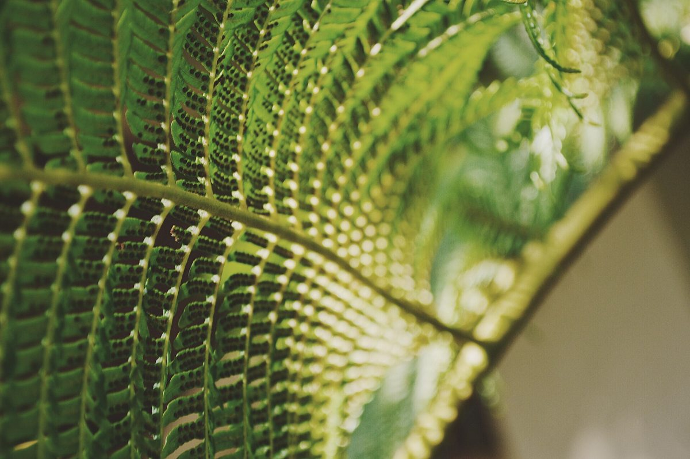

四の曲がり目口コミ
こんな声があるかもしれない
お店を知った人が思いそうなことを、制作側が想像して創作したものです。
以下は制作側が考えた創作のイメージ例で、実在のお客様の投稿ではありません。実際の口コミ・評価とは関係ありません。
いつか行ってみたいお店です。まずはInstagramをのぞいてみようと思います。
「木陰のパンカフェ せせらぎ」という名前が気になりました。Instagramの投稿を見てみたいです。
近くへ行く機会があれば、いつか訪ねてみたいと思っています。
